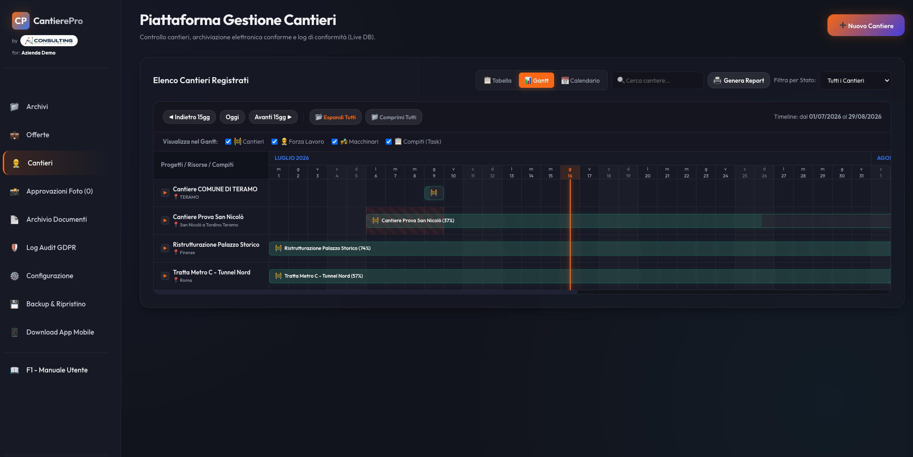
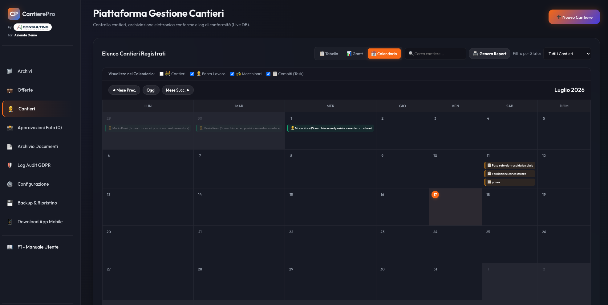
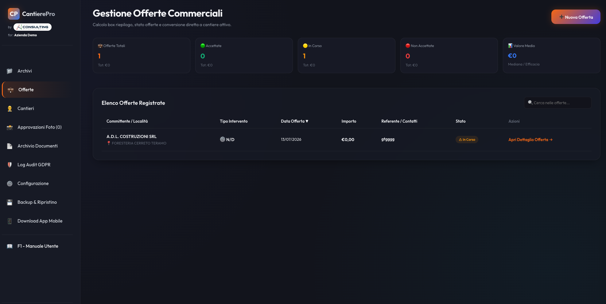
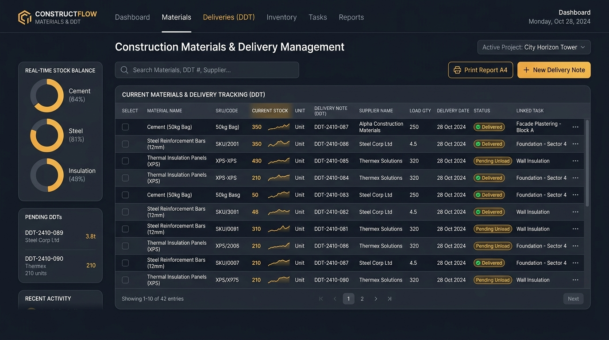
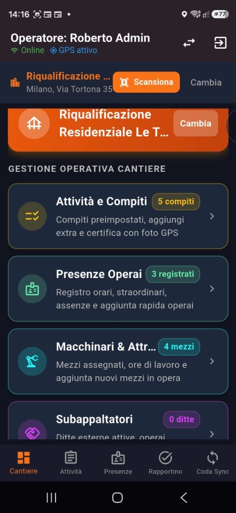
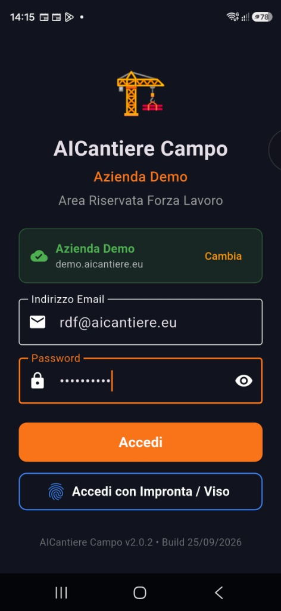
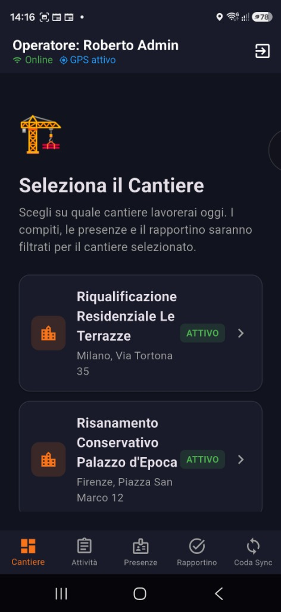

AICantiere unifica la preventivazione economica (Computo CME e offerte PDF), la logistica di cantiere con DDT e scarico materiali, il cronoprogramma Gantt a 60 giorni e l'operatività sul campo con app mobile 100% offline-first. Tutto in un'unica cabina di regia.
Basta compartimenti stagni. AICantiere collega in un unico filo digitale l'ufficio preventivi, la direzione tecnica e le squadre sul campo.
Scomposizione gerarchica in capitoli e voci di costo elementari: materiali, manodopera, noli e sicurezza, con importazione da prezzari regionali e DEI.
Applicazione del mark-up d'impresa o del ribasso d'asta, ricalcolo immediato dell'imponibile e generazione del fascicolo PDF ufficiale con computo allegato.
Alla firma del committente, un click crea il cantiere e trasforma in automatico le voci di computo nei compiti operativi delle squadre, con cronoprogramma e % SAL.
Ingresso merci da bolle fornitore con memoria alias e scarico materiali vincolato obbligatoriamente al compito eseguito, garantendo il controllo industriale dei costi.
Dalla preventivazione economica alla contabilità delle forniture, fino alla certificazione probatoria dei lavori eseguiti sul campo.
Gestione WBS a capitoli e categorie, prezzari regionali e DEI, con scomposizione analitica dei costi elementari (materiali, manodopera, noli e oneri di sicurezza).
Calcolo automatico di ribassi d'asta e mark-up. Generazione immediata del PDF ufficiale documento_offerta con copertina istituzionale, quadro economico e computo allegato.
Conversione automatica 1-click delle voci di computo nei compiti operativi assegnati al personale, con cronoprogramma date inizio/fine e percentuale SAL sincronizzata.
Registrazione bolle di consegna con cantiere, vettore, targa e aliquota IVA. Apprendimento automatico degli alias commerciali dei fornitori per una catalogazione senza errori.
Prelievo merci vincolato obbligatoriamente alla selezione della lavorazione. Il sistema memorizza permanentemente il titolo esteso del compito nel movimento contabile.
Calcolo istantaneo delle giacenze (Σ Carichi − Σ Scarichi) e pulsante 🖨️ Stampa Report con 3 modalità (Tutto, Solo Carichi, Solo Scarichi) e filtro selettivo Fornitore.
Griglia temporale dinamica scorrevole con espansione risorse: operai con mansione, macchinari, sospensioni per maltempo e allarme automatico sovrapposizioni ⚠️ nel calendario.
Fascicolo completo D.Lgs. 36/2023 con figure di legge (RUP, D.L., CSE, CSP, Capocantiere), storico nomine e generazione PDF di determine, notifiche e verbali di inizio/fine lavori.
Switch istantaneo tra Ardesia (fondo chiaro anti-riflesso e testo `#1E293B` ad altissimo contrasto per uso all'aperto sotto la luce solare diretta), Medio (ufficio) e Classica.
Ogni foto cattura data e ora certa e coordinate satellitari inalterabili. Il Direttore Lavori approva le foto con mappa per certificare lavorazioni coperte e avanzamenti SAL.
Indicizzazione automatica di DURC, SOA, POS, Polizze CAR e fatture. Ricerca full-text istantanea dentro i PDF con motore locale gratuito e modelli Fac-Simile con etichetta guidata.
Rapportini giornalieri con meteo GPS, rispetto D.M. 143/2021 (Cassa Edile) e modulo di stampa ufficiale A4 per l'ufficio paghe con sintesi ore ed esploso con date gg/mm/aaaa.
Design modulare con supporto multi-palette ergonomico. Ottimizzata per l'uso in ufficio su desktop o in mobilità su tablet e smartphone.
Panoramica completa del portafoglio lavori: volumi economici contrattuali, avanzamento temporale automatico e filtri per categoria d'opera.

Timeline scorrevole con espansione asincrona per singola risorsa (operai, macchinari, sospensioni meteo e milestone scadenze compiti).

Rilevamento istantaneo delle doppie assegnazioni di operai o macchinari sullo stesso giorno, azzerando i costosi fermi cantiere.

Scomposizione analitica dei prezzi, applicazione mark-up/ribasso, stampa offerta PDF e conversione 1-click in cantiere con compiti operativi.

Ingresso bolle fornitore con memoria alias, calcolo giacenze in tempo reale, scarico vincolato al compito in corso e stampa report A4.

Timbrature GPS, scarico materiali rapido sui compiti, prove fotografiche certificate EXIF e fascicolo digitale consultabile senza rete.


L'applicazione AICantiere Campo per Android e tablet è concepita per la massima semplicità operativa: pulsanti grandi, zero complicazioni e 100% di funzionamento anche in assenza di segnale telefonico.
Funziona in gallerie, scavi e piani interrati: dati, foto e timbrature salvati in locale e sincronizzati al ritorno del segnale.
Rilevamento satellitare di ingresso e uscita certificato: dati validi per Cassa Edile e verifiche di congruità CNCE EdilConnect.
Data e ora certa EXIF e coordinate GPS incorporate nell'immagine: tutela totale contro contestazioni su lavorazioni coperte e SAL.
Registrazione rapida del prelievo merci con associazione diretta al compito in corso, aggiornando le giacenze di cantiere con un tocco.
Controllo dei mezzi presenti sul posto, ore di funzionamento effettivo e registrazione di stati operativi e fermi macchina.
Censimento ditte terze autorizzate, controllo idoneità e monitoraggio giornaliero delle maestranze in subappalto presenti.
Accesso immediato a POS, DURC aziendali, planimetrie e relazioni tecniche direttamente dallo smartphone sul campo.
Digitalizzazione rapida di DDT cartacei, bolle e certificati con invio istantaneo alla cabina di regia dell'ufficio tecnico.
Generazione automatica a fine giornata con sintesi presenze, ore lavorate, mezzi impiegati e avanzamento dei compiti svolti.
Visualizzazione ottimizzata con la Palette Ardesia per leggere chiaramente schede e compiti anche sotto la luce solare diretta.
Il confronto analitico tra i metodi tradizionali e i vantaggi operativi ed economici garantiti da AICantiere.
| Ambito Operativo | ❌ Gestione Tradizionale | ✅ Con la Piattaforma AICantiere |
|---|---|---|
| Computo Metrico & Preventivi | Fogli Excel isolati, ricalcoli manuali continui, preventivi scollegati dalla produzione reale | Computo CME integrato con scomposizione costi, offerta PDF in 1 click e conversione automatica in cantiere |
| Materiali, DDT & Giacenze | Bolle cartacee nei furgoni, giacenze sconosciute, fatture passive pagate senza controllo consegne | DDT con memoria alias, carico live, scarico vincolato al titolo esteso del compito e report A4 ufficiale |
| Compiti Operativi (WBS Lavori) | Attività comunicate a voce o su chat disordinate, senza correlazione con il budget del computo | Compiti generati direttamente dal computo con cronoprogramma date inizio/fine e % SAL in tempo reale |
| Foto di Cantiere & Prove SAL | Chat WhatsApp confuse, immagini non datate, facilmente contestabili da committenti e periti | Foto con data certa EXIF e coordinate GPS satellitari inoppugnabili; approvazione D.L. con mappa |
| Pianificazione Risorse & Mezzi | Fogli di calcolo separati, rischio continuo di doppie assegnazioni e costosi mezzi speciali fermi | Gantt a 60gg con espansione risorse e allarme automatico conflitti ⚠️ nel calendario mensile |
| Operatività sul Campo | Blocco totale dei gestionali cloud tradizionali se manca internet (gallerie, scavi, piani interrati) | Architettura Offline-First al 100%: l'app salva tutto in locale e sincronizza automaticamente al rientro |
| Ricerca Documenti & Fascicolo | Fascicoli cartacei polverosi o cartelle disordinate; ore perse per reperire un DURC o un POS | Archivio digitale con OCR AI: ricerca full-text istantanea dentro i file PDF con motore gratuito illimitato |
| Report Paghe & Presenze | Rapportini cartacei illeggibili, riconteggi manuali a fine mese e date confuse | Stampa Report Ufficiale A4 con sintesi ore, congruita Cassa Edile (CNCE) ed esploso in date gg/mm/aaaa |
| Ergonomia Visiva sul Campo | Schermate scure illeggibili sotto la luce solare o sfondi chiari accecanti nelle ore d'ufficio | 3 Palette Ergonomiche con modalità Ardesia chiara e anti-riflesso per leggere schede sotto il sole |
| Proprietà dei Dati & Sicurezza | Dati vincolati al fornitore (vendor lock-in) e backup parziali o a pagamento | Backup totale 1-click (Database + intero archivio fisico ZIP), registro audit GDPR immutabile |
Richiedi le credenziali di accesso all'ambiente demo per testare tutte le 106 funzionalità con cantieri aperti, computi metrici, DDT materiali, presenze e documenti reali già configurati.
AIConsulting di Di Franco Roberto
demo.aicantiere.eu | prog.aicantiere.eu